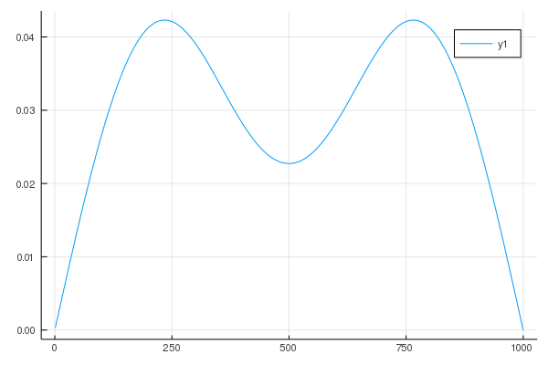
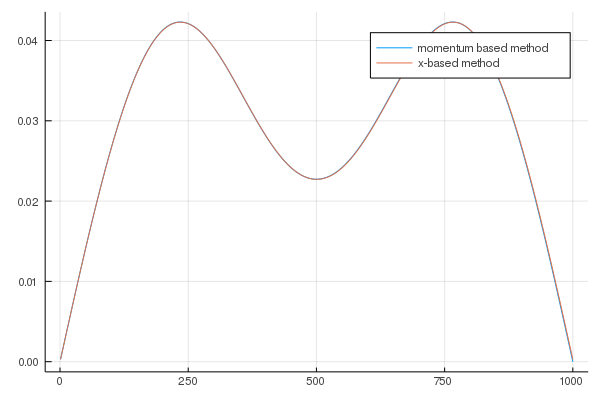
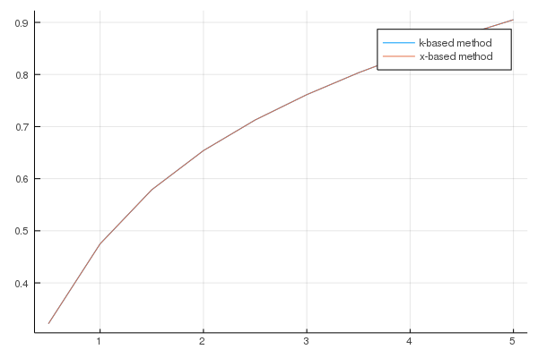
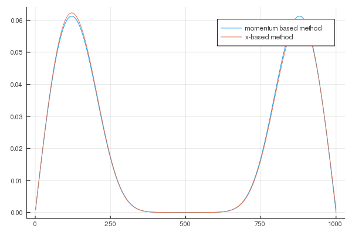
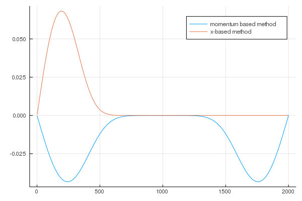
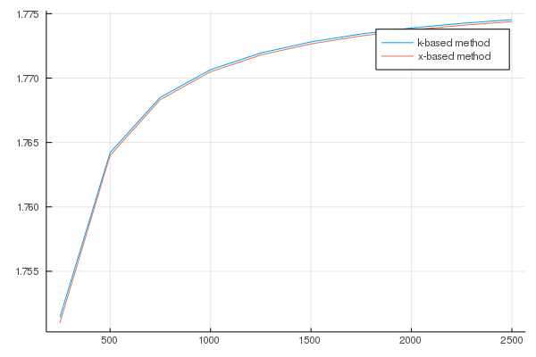

波数表示で解いてみる。ガウス関数形ポテンシャルのある問題
波数表示でのシュレーディンガー方程式
シュレーディンガー方程式を別の表示で書いてみる。 ベクトルの言葉で言えば、$\psi(x)$をベクトル${\bf \psi}$の$x$成分である（離散化していれば$x_i$は$i$番目の要素）とみなせば、 任意の基底のベクトル${\bf c}$はユニタリー行列$U$を用いて
と書ける。 成分表示だと
となり、$U_{ik}$を
とおけば、フーリエ変換となっていることがわかる。 離散化しない場合には、
である。 このとき、
となる。ここで、ポテンシャル$V(x)$をフーリエ変換すると
となるので、 $\exp (- i k' x)$をかけて$x$で積分すると
となる。これが波数表示のシュレーディンガー方程式である。 ここで、
を用いた。これは、直感的には、位相の異なる波は全部足しあわせて消えてしまうけれど、位相の同じ波$k=k'$の時だけ残る、ということを表している。
両側に壁がある場合
これまで考えてきた、両側に壁がある場合を波数表示で解いてみよう。 境界条件は、
である。 解を
と置く。 このとき、
が境界条件となる。しかし、これらの境界条件をみたすように解を決めるのは難しい。なぜなら、それぞれの固有値に対応する固有関数ごとに、これらの境界条件を満たさなければならないからである。もし、あらかじめ一般解が求められている場合、一般解を得たあとに境界条件によって係数$c_k$を決めることができる。例えば、ポテンシャルがゼロの場合、一般解は
であり、ある固有値$\epsilon$があるとき、波数$k$が定まる（$k$はいい量子数である、とも言う。）。しかし、ポテンシャルがある場合には、波数表示のシュレーディンガー方程式をみればわかるように、ある固有値に対する固有関数は複数の波数を持つ。どのような複数の波数をもつかは、解いてみないとわからないので、境界条件を満たすためにどのようにすればよいかがわからない。 これを解決するために、解を少し書き換えてみよう。
とする。さらに、
と書き換え、$a_k = c_k + c_{-k}$, $b_k = i(c_k - c_{-k})$と新しい定数を定義すると、
となる。 この形で見ると、一つ目の境界条件
は
に、もう一つの境界条件
は
となる。 そして、$k>0$として、$k$に関するシュレーディンガー方程式
から $-k$に関するシュレーディンガー方程式
を差し引くと、
となる。
数値的に解く
さて、以上で問題を整理できたので、実際に数値的に解いてみよう。ポテンシャルは前回のノートで導入したガウス関数とする。
ガウス関数のフーリエ変換
より
となる。 よって、$V_{k-k'}-V_{-k-k'} -V_{k+k'}+V_{-k+k'}$は
となる。
前回のノートを合わせるために、
N=1000
a = 0.01
dx = N/6
ξ = dx*a
center = (N+1)/2
x0 = center*aとする。その結果、ポテンシャルは
function calc_vq(q,ξ,V0)
vq = sqrt(π*ξ^2)*exp(-q^2*ξ^2/4)
return vq
endとなり、$V_{k-k'}-V_{-k-k'} -V_{k+k'}+V_{-k+k'}$は
function calc_Vkkp(k,kp,ξ,x0,V0)
q1 = k - kp
vq1 = calc_vq(q1,ξ,V0)
q2 = k + kp
vq2 = calc_vq(q2,ξ,V0)
Vkkp = 2*V0*(cos(q1*x0)*vq1 - cos(q2*x0)*vq2)
return Vkkp
endとなる。$k'$に関する積分は、$k'$が離散的にしかとれないため、
と近似し、積分を和に置き換える。 そして、ハミルトニアンは
function make_Hk(N,a,V0)
mat_Hk = zeros(Float64,N,N)
dx = N/6
ξ = dx*a
center = (N+1)/2
x0 = center*a
L = (N+1)*a
for n in 1:N
k = n*π/L
for np in 1:N
v = 0.0
if n == np
v = k^2
end
kp = np*π/L
Vkkp = calc_Vkkp(k,kp,ξ,x0,V0)
v += Vkkp*(1/2L)
mat_Hk[n,np]= v
end
end
return mat_Hk
endである。ポテンシャルがない時は
using LinearAlgebra #対角化のルーチンeigenを呼ぶ準備 v0.7以降必要
V0 = 0.0
mat_H = make_Hk(N,a,V0)
ε,ψ = eigen(mat_H)
println("Potential = ",V0," Minimum eigenvalue = ",ε[1])Potential = 0.0 Minimum eigenvalue = 0.09849894761671256となる。これは、厳密解
a = 0.01
L = (N+1)*a
ε1 = π^2/L^2
println(ε1)0.09849894761671255とほぼ一致する。
ポテンシャルがある場合、
using Plots
gr()V0 = 1.0
N = 1000
a = 0.01
mat_H = make_Hk(N,a,V0)
ep,psi = eigen(mat_H)
println(ep[1])
a = 0.01
rp = zeros(Float64,N)
L = a*N
for i in 1:N
xi = a*i
for ik in 1:N
k = π*ik/L
rp[i] += psi[ik,1]*sin(k*xi)
end
end
C = sum(dot(rp[1:N],rp[1:N]))
rp = rp/sqrt(C)
xin = []
for i in 1:N
push!(xin,i)
end
plot(xin,rp)0.4749787534206423
最低エネルギーの解は上のようになる。差分化した場合と解を比べてみよう。差分化のハミルトニアンとポテンシャルは
function make_H1dv(N,a,V0)
mat_H = zeros(Float64,N,N)
vec_V = calc_V(N,V0)
for i in 1:N
for dx in -1:1
j = i + dx
v = 0.0
if dx == 0
v = (2/a^2 + vec_V[i])
elseif dx == 1
v = -1/a^2
elseif dx == -1
v = -1/a^2
end
if 1 <= j <= N
mat_H[i,j] = v
end
end
end
return mat_H
end
function calc_V(N,V0)
vec_V = zeros(Float64,N)
dx = N/6
center = (N+1)/2
for i in 1:N
vec_V[i] = V0*exp(-(i-center)^2/(dx^2))
end
return vec_V
endなので、二つを重ねてプロットすると
N = 1000
a = 0.01
V0=1.0
mat_Hx = make_H1dv(N,a,V0)
εx,ψx = eigen(mat_Hx)
plot(xin,[rp,ψx[1:N,1]],label=["momentum based method" "x-based method"])
となり、二つの方法は完全に同じ解を出している。 そして、ポテンシャルの強さを変えると、
a = 0.01
N=1000
function gs1(a,N)
minimums =[]
for v in 1:10
V0 = v*0.5
mat_H = make_Hk(N,a,V0)
ε,ψ = eigen(mat_H)
push!(minimums,ε[1])
println("Potential = ",V0," Minimum eigenvalue = ",ε[1])
end
return minimums
end
minimums = gs1(a,N)Potential = 0.5 Minimum eigenvalue = 0.32166861033304633
Potential = 1.0 Minimum eigenvalue = 0.47497875342064344
Potential = 1.5 Minimum eigenvalue = 0.5788045644645459
Potential = 2.0 Minimum eigenvalue = 0.6539481895346537
Potential = 2.5 Minimum eigenvalue = 0.7126726541930689
Potential = 3.0 Minimum eigenvalue = 0.7613358304278549
Potential = 3.5 Minimum eigenvalue = 0.8033245079819215
Potential = 4.0 Minimum eigenvalue = 0.840571407201232
Potential = 4.5 Minimum eigenvalue = 0.8742613856328483
Potential = 5.0 Minimum eigenvalue = 0.9051684806256943となる。 差分化した場合と比較してプロットすると、
a = 0.01
N=1000
function gs2()
minimums_x =[]
for v in 1:10
V0 = v*0.5
mat_Hx = make_H1dv(N,a,V0)
εx,ψx = eigen(mat_Hx)
push!(minimums_x,εx[1])
println("Potential = ",V0," Minimum eigenvalue = ",εx[1])
end
return minimums_x
end
minimums_x = gs2()
function gs3()
potentials = []
for v in 1:10
V0 = v*0.5
push!(potentials,V0)
end
return potentials
end
potentials = gs3()
plot(potentials,[minimums,minimums_x],label=["k-based method" "x-based method"])Potential = 0.5 Minimum eigenvalue = 0.3216680437594529
Potential = 1.0 Minimum eigenvalue = 0.47497702625749055
Potential = 1.5 Minimum eigenvalue = 0.5788014430373154
Potential = 2.0 Minimum eigenvalue = 0.6539436690715744
Potential = 2.5 Minimum eigenvalue = 0.7126667576418749
Potential = 3.0 Minimum eigenvalue = 0.7613285627430311
Potential = 3.5 Minimum eigenvalue = 0.8033158575112843
Potential = 4.0 Minimum eigenvalue = 0.8405613523837149
Potential = 4.5 Minimum eigenvalue = 0.8742498997697548
Potential = 5.0 Minimum eigenvalue = 0.905155534659135
となり、ほとんと結果は変わらない。 最後に、非常に大きなポテンシャルをいれて、ふるまいを見てみよう。
V0 = 40.0
N = 1000
a = 0.01
mat_H = make_Hk(N,a,V0)
ep,psi = eigen(mat_H)
println("momentum-based method: ",ep[1])
a = 0.01
rp = zeros(Float64,N)
L = a*N
for i in 1:N
xi = a*i
for ik in 1:N
k = π*ik/L
rp[i] += psi[ik,1]*sin(k*xi)
end
end
C = sum(dot(rp[1:N],rp[1:N]))
rp = rp/sqrt(C)
xin = []
for i in 1:N
push!(xin,i)
end
mat_Hx = make_H1dv(N,a,V0)
εx,ψx = eigen(mat_Hx)
println("x-based method ",εx[1])
plot(xin,[rp,ψx[1:N,1]],label=["momentum based method" "x-based method"])momentum-based method: 1.7706582149528631
x-based method 1.7704925469067738
少しずれた。どちらが正しいのだろうか。$a$の値を変えてみる。
V0 = 40.0
N = 2000
a = 0.005
mat_H = make_Hk(N,a,V0)
ep,psi = eigen(mat_H)
println("momentum-based method: ",ep[1])
a = 0.01
rp = zeros(Float64,N)
L = a*N
for i in 1:N
xi = a*i
for ik in 1:N
k = π*ik/L
rp[i] += psi[ik,1]*sin(k*xi)
end
end
C = sum(dot(rp[1:N],rp[1:N]))
rp = rp/sqrt(C)
xin = []
for i in 1:N
push!(xin,i)
end
mat_Hx = make_H1dv(N,a,V0)
εx,ψx = eigen(mat_Hx)
println("x-based method ",εx[1])
plot(xin,[rp,ψx[1:N,1]],label=["momentum based method" "x-based method"])momentum-based method: 1.7738901472889101
x-based method 0.7101076631125441
違いがでてきた。左右対称になっている分、波数表示のほうが精度がよいと思われる。
a = 0.01
N=1000
function gs4()
minimums =[]
V0 = 40.0
for nn in 1:10
N = 250*nn
a = 10.0/N
mat_H = make_Hk(N,a,V0)
ε,ψ = eigen(mat_H)
push!(minimums,ε[1])
println("Number = ",N," Minimum eigenvalue = ",ε[1])
end
return minimums,ψ
end
minimums,ψ = gs4()
a = 0.01
N=1000
function gs5()
minimums_x =[]
for nn in 1:10
N = 250*nn
a = 10.0/N
mat_Hx = make_H1dv(N,a,V0)
εx,ψx = eigen(mat_Hx)
push!(minimums_x,εx[1])
println("Number = ",N," Minimum eigenvalue = ",εx[1])
end
return minimums_x,ψx
end
minimums_x,ψx = gs5()
function gs6()
numbers = []
for nn in 1:10
N = 250*nn
push!(numbers,N)
end
return numbers
end
numbers = gs6()
plot(numbers,[minimums,minimums_x],label=["k-based method" "x-based method"])Number = 250 Minimum eigenvalue = 1.751430241169984
Number = 500 Minimum eigenvalue = 1.7642178126259767
Number = 750 Minimum eigenvalue = 1.7685079437298705
Number = 1000 Minimum eigenvalue = 1.7706582149528631
Number = 1250 Minimum eigenvalue = 1.7719500472705696
Number = 1500 Minimum eigenvalue = 1.7728119653499836
Number = 1750 Minimum eigenvalue = 1.7734279625561844
Number = 2000 Minimum eigenvalue = 1.7738901472889101
Number = 2250 Minimum eigenvalue = 1.7742497350624604
Number = 2500 Minimum eigenvalue = 1.7745374750821823
Number = 250 Minimum eigenvalue = 1.7510002431811835
Number = 500 Minimum eigenvalue = 1.7640001313662867
Number = 750 Minimum eigenvalue = 1.7683290109090355
Number = 1000 Minimum eigenvalue = 1.7704925469067738
Number = 1250 Minimum eigenvalue = 1.771790369471922
Number = 1500 Minimum eigenvalue = 1.7726554576321534
Number = 1750 Minimum eigenvalue = 1.7732733148806288
Number = 2000 Minimum eigenvalue = 1.7737366731519555
Number = 2250 Minimum eigenvalue = 1.7740970422564775
Number = 2500 Minimum eigenvalue = 1.7743853244582213
波数表示のほうが若干精度がよい気がする。一方、一番$N$が大きいときの最小値の解は
N = 2500
V0 = 40.0
a = 10.0/N
mat_H = make_Hk(N,a,V0)
ε,ψ = eigen(mat_H)
mat_Hx = make_H1dv(N,a,V0)
εx,ψx = eigen(mat_Hx)
rp = zeros(Float64,N)
L = a*N
for i in 1:N
xi = a*i
for ik in 1:N
k = π*ik/L
rp[i] += ψ[ik,1]*sin(k*xi)
end
end
C = sum(dot(rp[1:N],rp[1:N]))
rp = rp/sqrt(C)
xin = []
for i in 1:N
push!(xin,i)
end
println("x-based method ",εx[1])
plot(xin,[-rp,ψx[1:N,1]],label=["momentum based method" "x-based method"])x-based method 1.7743853244582213
両方ともよい精度が出ているように見える